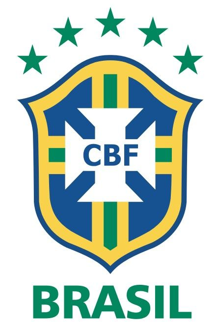
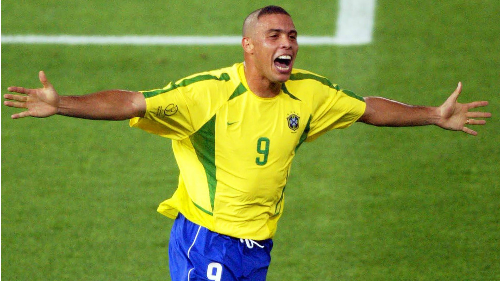

Brazil
Brazil National Team
Brazil (Portuguese: Brasil; Brazilian Portuguese: [bɾaˈziw]),[nt 4] officially the Federative Republic of Brazil (Portuguese: About this soundRepública Federativa do Brasil),[11] is the largest country in both South America and Latin America. At 8.5 million square kilometers (3.2 million square miles)[12] and with over 211 million people, Brazil is the world's fifth-largest country by area and the sixth most populous. Its capital is Brasília, and its most populous city is São Paulo. The federation is composed of the union of the 26 states and the Federal District. It is the largest country to have Portuguese as an official language and the only one in the Americas;[13][14] it is also one of the most multicultural and ethnically diverse nations, due to over a century of mass immigration from around the world;[15] as well as the most populous Roman Catholic-majority country.
Ronaldo Luis Nazario
 Ronaldo Luís Nazário de Lima (Brazilian Portuguese: [ʁoˈnawdu ˈlwis nɐˈzaɾju dʒi ˈɫĩmɐ]; born 18 September 1976),[2] commonly known as Ronaldo, is a Brazilian business owner, president of La Liga club Real Valladolid, and a retired professional footballer who played as a striker. Popularly dubbed in Portuguese O Fenômeno ("The Phenomenon"),[3] he is widely considered one of the greatest players of all time. As a multi-functional striker who brought a new dimension to the position, Ronaldo has been the influence for a generation of strikers that have followed. His individual accolades include being named FIFA World Player of the Year three times, and winning two Ballon d'Or awards.- 1998 FIFA World Cup
- 2002 FIFA World Cup
- 2006 FIFA World Cup